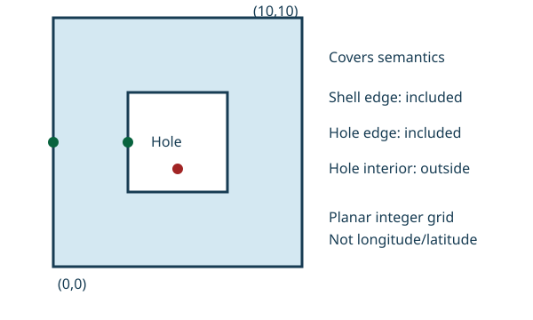

Lab L20 · Java + Go
Implementing a geofencing engine
Build a geofence monitor for one circular zone. Feed it position updates per object; for each update it reports whether the object is now inside and whether that is a change (an enter or exit event). A hysteresis margin stops an object hovering at the boundary from flapping in and out, and per-object sequence numbers make it ignore updates that arrive out of order.
The task
An airport has a 500 m pickup zone. When a driver enters it they join the airport queue; when they leave they are removed. GPS jitter near the edge would otherwise produce enter, exit, enter, exit within seconds. So the zone uses two radii: enter at radius, but exit only beyond radius + margin. Phones send updates with an increasing sequence number, and a delayed old update must not undo a newer one. Distance comes from L19's NearbyIndex.distance.
What you implement
public final class GeofenceEngine {
public record Result(boolean inside, boolean changed, boolean stale, long sequence) {}
public GeofenceEngine(NearbyIndex.Point center, double radiusMeters, double marginMeters, int maxObjects);
public Result observe(String id, long sequence, NearbyIndex.Point position);
public void forget(String id); // drop the object's state
}Rules
- An object that is outside enters when
distance <= radius. - An object that is inside stays inside while
distance <= radius + margin, and exits beyond that. - An object's first observation is compared against “outside”: if it is inside,
changedis true (an enter). sequence <=the last accepted sequence for that id →stale = true,changed = false, and the previous state is returned unchanged.- Negative sequence →
IllegalArgumentException. A new object whenmaxObjectsare tracked →IllegalStateException;forgetfrees a slot. - Invalid configuration (invalid center, negative or non-finite radius or margin,
maxObjects <= 0) →IllegalArgumentException.
Worked example
radius = 100 m,margin = 20 m.- seq 1 at 90 m → inside, changed (enter). seq 2 at 110 m → inside, not changed (still ≤ 120).
- seq 3 at 125 m → outside, changed (exit). seq 4 at 110 m → outside, not changed (re-entry needs ≤ 100).
- seq 2 again → stale; state stays outside with sequence 4.
Files and commands
Read the tests first, then replace each TODO in the starter until they pass. Java starter: GeofenceEngine.java · tests: GeofenceEngineTest.java. Go starter: engine.go · tests: engine_test.go.
cd java
./gradlew test --tests 'labs.geofence.*'
cd go
go test -race -count=1 ./geofenceReveal the reference solutions
Java: GeofenceEngine.java
Go: engine.go
When to use
Use this lab for one immutable circular geographic fence and a bounded collection of object states. The centre uses latitude/longitude degrees, the radius and hysteresis margin use metres, and distances use the nearby-search lab's spherical model. Each object sends a nonnegative, strictly increasing sequence number. Duplicate or older observations return stale status without changing membership or generating a transition.
The geofence packages retain the spherical circular model. The paired spatial packages add immutable polygons with holes on a bounded planar integer grid and a revisioned fence state machine. Do not pass degree coordinates to this planar API. Neither variant produces a durable event stream or promises exact ellipsoidal geodesics. The owner must persist transitions if delivery is consequential.
Steps
- Separate classification from transition state. A previously outside object enters when its computed distance is at or inside the radius. A previously inside object exits only when its distance exceeds radius plus margin. First observations are compared with an outside baseline: an inside first observation emits entry, while an outside one emits no transition.
- Make hysteresis intentional. An observation between the two radii preserves the prior state, reducing boundary oscillation. It does not prove measurement correctness or filter an implausible GPS jump. A margin of zero reduces to an inclusive radius test without spatial hysteresis.
- Reject stale observations atomically. Check sequence and mutate membership under one lock. Two concurrent observations cannot apply an older state after a newer one. Sequence numbers belong to a defined producer epoch; timestamps alone may not establish freshness across devices or restarts.
- Bound cardinality. Reject a new identity when object capacity is full. Forget explicitly releases state, including its sequence history. After forgetting, old observations can be accepted again; the owner must decide whether loss of deduplication history is safe and bound identity lengths separately.
- Test a transition narrative. Enter at the centre, move just outside the radius but inside the hysteresis band, then submit an older observation far away. Membership should remain inside without a new event. A later point outside the expanded radius emits exactly one exit. Test capacity rejection and explicit forgetting.
- Exercise polygons and revisions. The polygon accepts simple rings with three to 4,096 vertices, coordinates within plus/minus one million, no collinear consecutive edges, and strictly interior disjoint holes. Exact orientation arithmetic supports covers-style inclusion of shell and hole boundaries. A higher fence revision reclassifies retained points atomically and returns ordered transitions, including for stationary objects. Test a point in a hole, on each boundary, and a stale observation after replacement. Spatial Predicates and Boundary Semantics explains this deliberately restricted domain.
Checklist
Recall and variation

Rebuild observation-version checking before reading the circular Go or Java implementation. Then use the polygon and revision engine in spatial. Variation: exclude a stationary retained point with a higher fence revision and submit an older observation afterward. Acceptance: one exit is reported for the new revision and stale data does not reverse it.
- Shape, model, units, and entry/exit boundary rules are explicit
- Hysteresis preserves state rather than pretending to improve raw observations
- Older and duplicate sequence numbers cannot overwrite membership
- Object capacity and forgetting semantics are documented
- Transition detection is distinguished from reliable event delivery
Signals
Working: noisy observations in the hysteresis band produce no repeated enter/exit events, and stale data cannot reverse a newer state.
Going wrong: an older position reverses a newer entry, cleanup silently resets ordering guarantees, or planar and spherical coordinates are mixed. Circular observation is expected O(1); polygon classification is O(edges), construction validates ring intersections quadratically, and replacement reclassifies all retained objects under one lock.
Related
- Implementing Nearby-Object Search, for validated coordinates and spherical distance semantics.
- Implementing a Trajectory Processor, for observation histories and implausible movements.